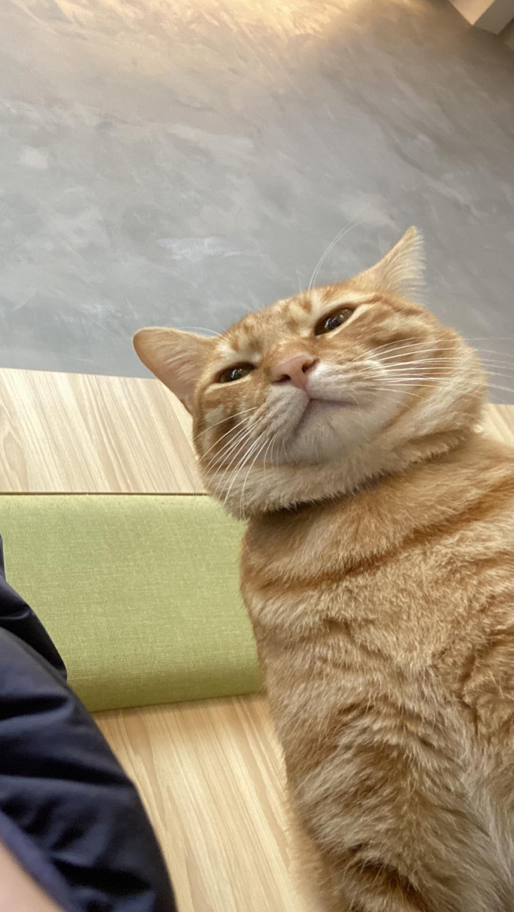
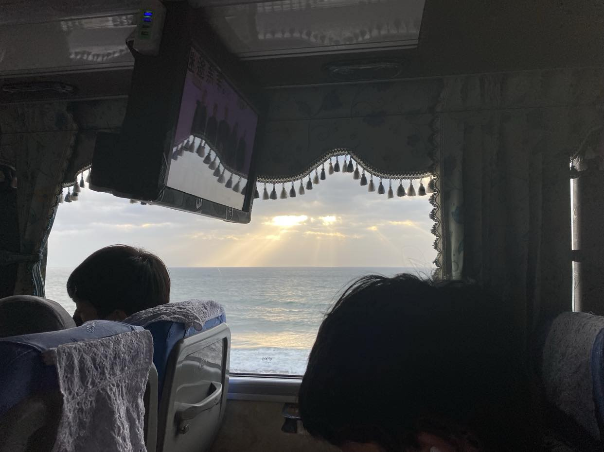
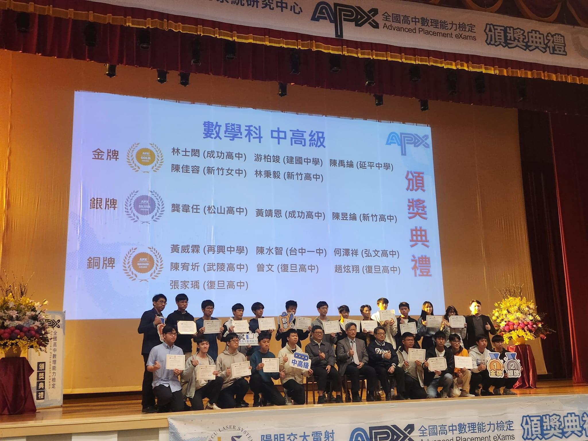
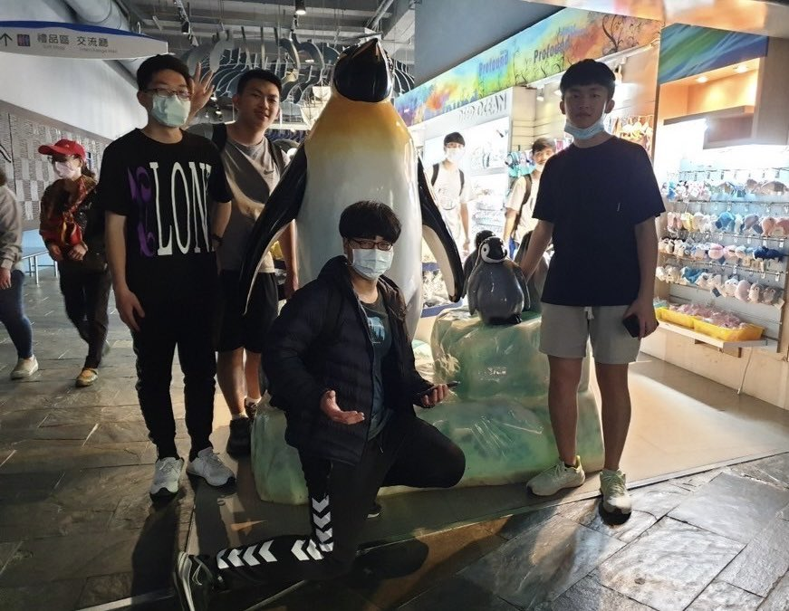

高中小小型創作
首先是我高中階段的創作(我高中才學吉他)，屬於我初期的創作，並且只有吉他伴奏~
而這些創作都是基於我當下心情或是想說的話寫出來的，所以都很短也不一定好聽~
直接使用手機錄音，歌詞也都是憑感覺寫的，就當茶餘飯後的點心看看吧~
工時:各約 1~2 小時
Song1 : 我短頭髮超像梨子
<歌詞>
我的頭髮像水流般 消失理髮間 卻又不相隨
我的劉海高舉正臉 深鎖眉頭間 卻也不亮眼
我就像從一片叢林 被濫砍濫伐 變成一片高山草原
像顆梨子 無法見人啊
<簡介>
這是我第一首自行創作的音樂片段，講述我剛剪完頭髮覺得自己很像一顆梨子見不得人的故事@_@
現在回頭看感覺還有好多地方可以改進啊啊啊啊啊!
.
.
.
Song2 : 下雨啦
<歌詞>
下~~~雨啦 Oh 下~~~雨啦
考完試我就待在家裡 握著switch想我的事情
沒料突然下場大雨 考完試~~~沒興趣~~~馬上去~~~衝學測
下~~~雨啦 Oh 下~~~雨啦
等了好久終於天降甘霖 已經無法再忍受烈日 配上無聊校長致詞
等了好久終於天降甘霖 為禮拜五天上一些歡愉 和好心情
下~~~雨啦 Oh 下~~~雨啦
<簡介>
這是我在某天段考完回家後在家放鬆時，窗外突然下起一場大雨時寫的歌
由於我非常喜歡雨天，所以那時候的心情莫名的好，就把我的心情寫進了歌裡
雖然還是有瑕疵，但我現在聽到這首歌還是會覺得心情莫名的好，算是很成功了吧XD
Song3 : Where is Toilet
<歌詞>
昨天補習班 九點半 一股神祕力量來襲
衝廁所 人滿為患 無處可逃只好衝往北車
衝廁所 正在施工 God I love you 🙃
打掃阿姨 看見我 救了我
於是我 上了廁所
<簡介>
這是在講某天我在補習班感受到肛門有猛獸將出柙而到處找廁所的故事
乍看之下只是一段普通的歌，而且我覺得旋律都差不多聽著很無聊(一大敗筆啊)
實際上我把心力都放在編曲上了，我不想只會刷chord，所以我把吉他固定指型的和弦音拆散
把這些音改變順序移到高把位，然後放在三拍子的節奏重複彈，偶爾在段落尾巴加一些變化~
算是一首讓我練習吉他編曲跟高把位的自創段落吧~
這首工時可能有 3、4 小時
Song4 : 久釀三明治
<歌詞>
昨天我 意外的 在書包 發現了
一個未經拆封完整的 三明治
然而它 承受了 幾個月 高壓的
高溫密封不受打擾的 千錘百鍊
所以它 沒有原因 反而變的 更加軟爛散發惡臭
它 充斥在我 書包內側 噁心不堪
<簡介>
這大概是最堪入耳的一首短歌了XD，我偶爾會把早餐放在書包帶到學校吃
某天我帶了一個 seven 三明治，結果它被壓在書包最下面，我就這樣忘了
某一天整理書包時突然聞到一股超級無敵噁心到爆炸的臭味，於是這首歌誕生了
我在這首短歌加入了比較多的爵士和弦，像 Dm9 G13 Cmaj9 這個和弦進行
雖然說很多流行歌也會用就是了，光是照著進行彈出來就不錯聽了，不愧是2-5-1，太神了
Song5 : I hate Google
<歌詞>
馬德里大師賽 每天看一集直播回放
今天回家打開 Google 卻被 Google 推薦暴雷
在幾天我就能把所有比賽看完
Oh Google 我不想知道冠軍是誰
自以為非常了解客戶
Oh Google 為什麼要爆我的雷 下一次我會選擇 Yahoo
<簡介>
我看特戰英豪的賽事通常是每一場都完整看完，但不可能每次都跟到直播
所以我看馬德里大師賽的時候進度會晚一點，然後我就被 Google 推薦的新聞暴雷了:)
因為這首是在學測後準備二階的時候寫的，不想花太多時間錄音，所以沒有錄太多次就草草發了
因此自認為瑕疵還挺多的，像後半段拍速直接爛掉，哭啊
不過總體而言我覺得相較於一開始已經進步許多了
持續更新中~ Wait for more~
隨機旋律產生器
程式碼
<簡介>
這是我第一個用 python 寫成的小工具(一段程式)
主要是用來提供我寫旋律時的靈感
它的功能為固定一段自訂的節奏，然後依據節奏用Beep()播放C大調裡隨機的音高
因為音是隨機的所以說不上好聽，只能拿來提供靈感XD
目前正在用空閒時間把它做成網頁工具，這樣輸入指令比較不麻煩，歡迎神人來使用它寫旋律
如果要找到更好用的工具的話，推薦你去看看好和弦(一個YT頻道)寫的NiceIdea音樂靈感產生器
我未來要優化隨機旋律產生器的話大概就會去參考NiceIdea~
工時 : (有點忘了)約 4~5 小時
Lunch Selector
 前往Lunch Selector
前往Lunch Selector
<簡介>
這是我在自學了一些寫網頁基礎後，寫出來的第一個網頁工具(對，你正瀏覽的這個網頁是第二個)
就是抱持著一個練習的心態寫出來ㄉ
因為常聽到家人和學校同學深陷午餐選擇困難的泥沼
尤其學校某些人硬是不吃早餐部
於是我就試著寫一個午餐選擇器出來了，不過它的資料庫僅囊括建中附近(午餐)和我家附近(晚餐)
目前已有自訂選項功能，之後優化會新增可以勾選的通常選項讓它變得更方便，也會嘗試家庭投票系統
程式碼的部分我寫的挺亂的，就不放上來了
誠心建議要學寫網頁的人千萬不要貪快，我RWD寫到快死掉(結果還是爛了只能堪用)，到頭來受苦的還是自己
工時 : 約一週
持續更新中~ Wait for more~
Intro
這裡一區會分享我的生活 !
可能是一些趣事，或是我覺得值得放到這裡的成就還是作品之類的

喔然後可能會出現很多貓貓
(上圖為北車附近某海南雞飯店裡的貓貓，用鄙視的眼神盯著鏡頭)
高中畢葉旅行

上圖 : 畢旅途中在遊覽車上拍到的海上聖光
因為畢旅是高二辦的，所以其實沒什麼傷感的感覺
不過現在(2024/3/31)快離開建中了，這些照片給我感覺不太一樣了
我只放一張照片上來，其他還有很多像大家晚上聚一起玩任天堂明星大亂鬥、玩狼人殺、
遇見絲絲、遇見郁婷喝超甜飲料、還有跟朋友各種在遊樂場玩的照片，畢旅是還挺快樂的
應該說超快樂的，彌補了國中因為疫情而沒有畢旅的遺憾，感謝班導，感謝308班。
APX數學中高級金牌領獎

上圖 : APX頒獎典麗
對雖然金牌不只一個人，但因為我很少去參加檢定之類的還拿牌所以我要放上來 (⁎⁍̴̛ᴗ⁍̴̛⁎)
圖片是在陽明交大新竹校區大禮堂，在舉行頒獎典禮，我是圖片左下角那一個
攝影師說「比個愛心」，結果最後只有我比愛心，其他人都比讚，非常好照片
注意看我左後方是野生的莊正昌 !
持續更新中~ Wait for more~

上圖中間那我
你好 ! 我目前是建國中學76th的一名高中生(*快不是了)
我不是社牛，想聯絡或認識我的話，歡迎參考下列聯絡方式 !
我的FB
我的IG
信箱 : timber1118@gmail.com